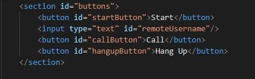
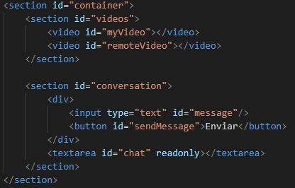

Videochat con WebRTC
Tania Álvarez Díaz
Difusión de contenidos multimedia vía web
Índice
- Introducción.
- Desarrollo.
- Desarrollo del servidor.
- Desarrollo del cliente.
- Ejecución.
- Despliegue.
Introducción
El proyecto consiste en el desarrollo de una aplicación de videochat utilizando WebRTC. Esta aplicación consta de:
- Servidor: encargado de gestionar las conexiones de los usuarios.
- Cliente: permite a los usuarios conectarse al servidor y realizar el intercambio de vídeo y mensajes de chat con el resto de usuarios conectados al servidor (usando el nombre de dicho usuario).
Desarrollo
- Visual Studio Code: para desarrollar el cliente y el servidor.
- XAMPP: para desplegar los clientes.
- Node.js: para instalar y ejecutar el servidor.

Desarrollo del servidor
- Server.js: fichero donde se encuentra la implementación del servidor.
- Uso de Express: framework web para Node.js.
- Uso de WebSockets: tecnología que proporciona un canal de comunicación bidireccional entre cliente y servidor.
- Evento "connection": se produce cuando se establece la conexión entre cliente y servidor.
-
Evento "message": se produce cuando el servidor recibe un mensaje del cliente a través de la conexión establecida.
- En función del tipo de mensaje se producen distintas acciones (siguiente transparencia).
Desarrollo del servidor
- Login: los clientes se registran en el servidor (username único).
- Offer: oferta de conexión que desea hacer un cliente a otro (ambos registrados en el sistema).
- Answer: respuesta de un cliente a la oferta de conexión.
- Candidate: candidato que se envía si la oferta de conexión ha sido aceptada.
- Leave: uno de los clientes abandona la conexión.
connection.on('message', function (message) {
var data;
try {
data = JSON.parse(message);
} catch (e) {
console.log("Error parsing JSON");
data = {};
}
switch (data.type)
{
case "login":
console.log("User logged in as", data.source);
if (users[data.source])
{
//username already exists, login not possible
sendTo(connection, {
type: "login",
success: false
});
} else {
users[data.source] = connection;
connection.source = data.source;
sendTo(connection, {
type: "login",
success: true
});
}
break;
case "offer":
console.log("Sending offer to", data.target);
var conn = users[data.target];
if (conn != null) {
connection.target = data.target;
//send offer to conn
sendTo(conn, {
type: "offer",
offer: data.offer,
source: connection.source
});
}
break;
case "answer":
console.log("Sending answer to", data.target);
var conn = users[data.target];
if (conn != null) {
connection.target = data.target;
//send answer to conn
sendTo(conn, {
type: "answer",
answer: data.answer
});
}
break;
case "candidate":
console.log("Sending candidate to", data.target);
var conn = users[data.target];
if (conn != null) {
sendTo(conn, {
type: "candidate",
candidate: data.candidate
});
}
break;
case "leave":
console.log("Disconnecting user from", data.target);
var conn = users[data.target];
if (conn != null) {
conn.target = null;
sendTo(conn, {
type: "leave"
});
}
break;
default:
sendTo(connection, {
type: "error",
message: "Unrecognized command: " + data.type
});
break;
}
});
Desarrollo del cliente
- Index.html: fichero que representa la vista del cliente.
- Botones: start (registrarse en el servidor), llamar, colgar.
- Videos: se muestran los videos de la videollamada (en grande el usuario local y en pequeño el remoto).
- Conversación: campo para escribir el mensaje a enviar y vista donde se muestra el chat completo.


Desarrollo del cliente
- Script.js: fichero donde se encuentra la implementación del cliente (funciones para realizar peticiones al servidor, intercambiar mensajes con otros usuarios, etc.).
-
Función "startingCallCommunication": se ejecuta cuando el usuario pulsa el botón de llamar.
- Establece una conexión (comunicación) entre dos usuarios (local y remoto).
- Crea un canal de datos para que los usuarios se puedan enviar mensajes.
function call() {
//Get username from input
remoteUsername = document.getElementById("remoteUsername").value;
console.log("Starting call");
//Establish connection
startingCallCommunication();
//We're all set! Create an offer to be 'sent to the callee as soon as the local SDP is ready
localPeerConnection.createOffer(gotLocalDescription, onSignalingError);
}
function startingCallCommunication() {
hangupButton.disabled = false;
//Communication between browsers
if (typeof RTCPeerConnection == "undefined")
RTCPeerConnection = webkitRTCPeerConnection;
console.log("RTCPeerConnection object: " + RTCPeerConnection);
//This is an optional configuration string , associated with NAT traversal setup
var configuration = {
//Servers on https://gist.github.com/yetithefoot/7592580
"iceServers": [{"url": "stun:stun.ekiga.net"}]
}
localPeerConnection = new RTCPeerConnection(configuration);
console.log("Created local peer connection object");
//Add the local stream to the local PeerConnection
localPeerConnection.addStream(theStream);
console.log("Added localStream to localPeerConnection");
//Add a handler associated with ICE protocol events
localPeerConnection.onicecandidate = gotLocalIceCandidate;
//...and a second handler to be activated as soon as the remote stream becomes available
localPeerConnection.onaddstream = gotRemoteStream;
//Configure dataChannel
dataChannel = localPeerConnection.createDataChannel("myChannel", {});
localPeerConnection.ondatachannel = handleDataChannel;
}
Ejecución
- Servidor: abrir la consola de Node.js.
- Acceder a la ruta del servidor.
- Ejecutar node server.js.
- Cliente: introducir el cliente en la carpeta htdocs de XAMPP.
- Ejecutar el servicio Apache de XAMPP.
- Abrir el navegador Chrome y ejecutar localhost/NOMBRE_CLIENTE donde NOMBRE_CLIENTE es el nombre de la carpeta donde se encuentran los archivos del cliente.
Despliegue
El código de esta aplicación se puede encontrar en el GitHub de la autora.